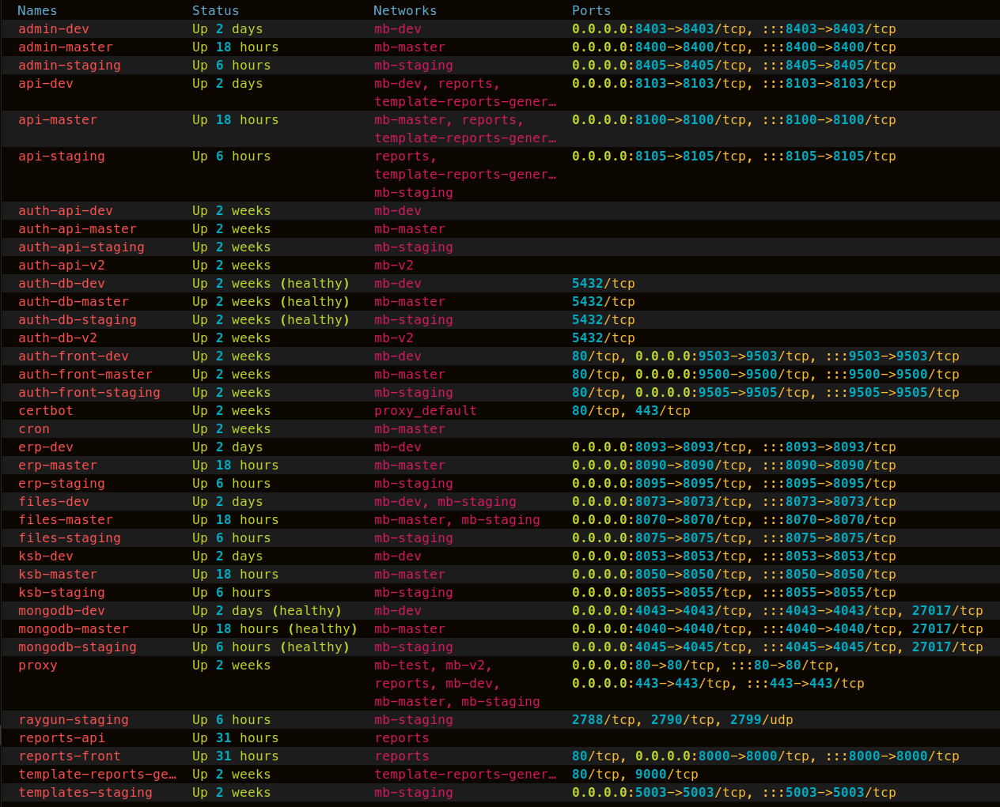

Типовое благоустройство удаленного сетевого узла
Организуйте доступ по ключам, это безопаснее, удобнее и быстрее. Работайте под рядовым пользователем, но разрешите выполнение команд с повышением привилегий без ввода пароля. Предоставьте пользвателю выполнение docker команд без необходимости использовать sudo. Установите в своё окружение удобные и производительные инструменты для работы с файловой системой, сетью, файлами, докером. Замените стандартный shell на что-то удобнее, например zsh или fish, это сделает вашу консоль эстетичнее, а работу производлительнее. Работая с docker, обеспечьте себя удобными инструментами, добавьте в ваши образы удобный редактор, файловые и сетевые утилиты. Работая внутри контейнеров также организуйте удобную среду, установите облочку bash, подкиньте преднастроенный .bashrc, кастомизируйте строку приглашения, добавьте нужные сокращения для команд, обеспечьте хранение истории команд между перезапусками сервиса.
теперь лучше раз увидеть, чем сто раз услышать
Улучшенный docker ps 